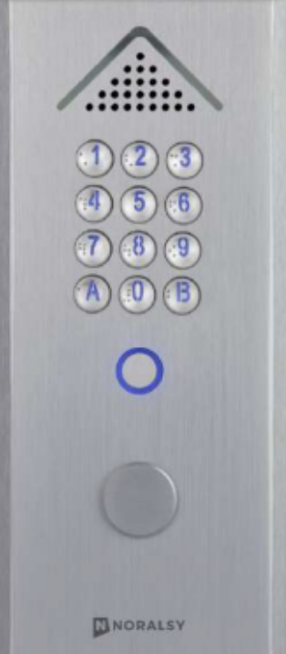
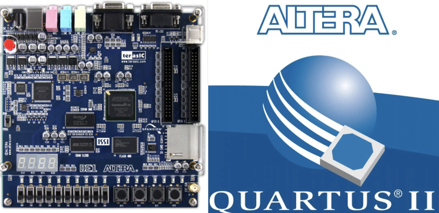
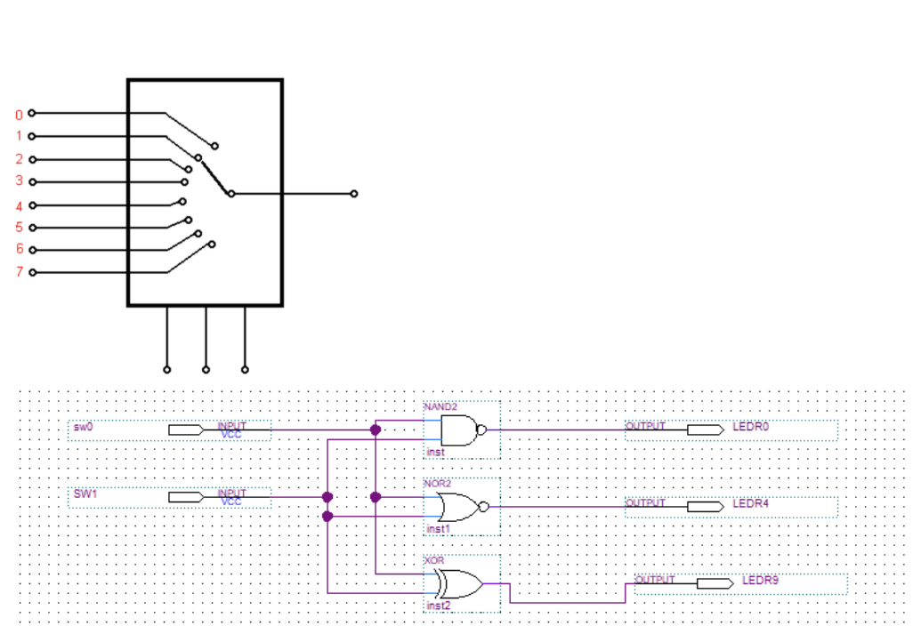
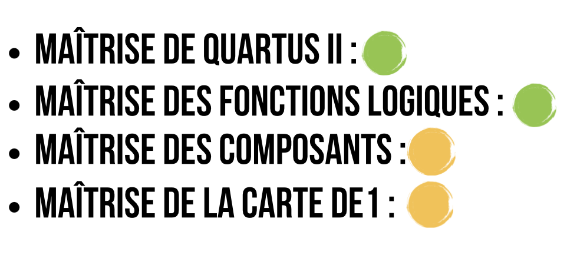
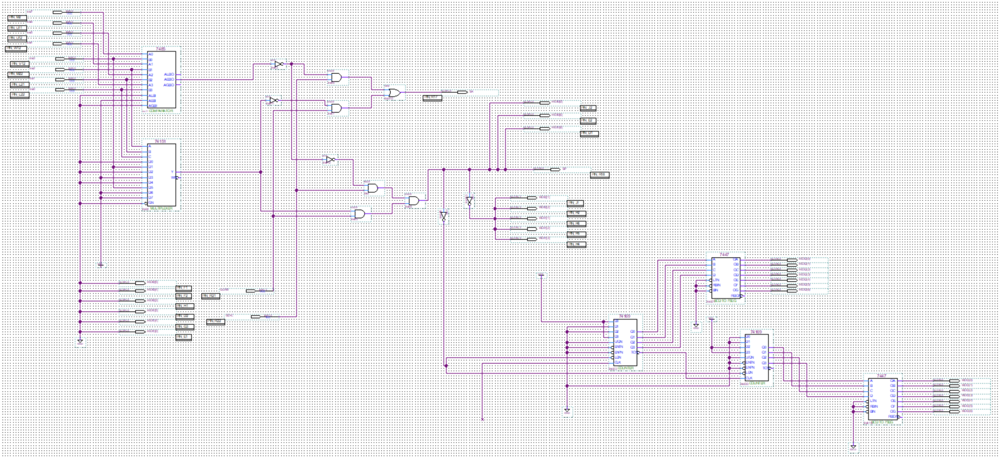

Contexte :
- Dans le cadre de ce projet d'électronique numérique, l'objectif était de concevoir et de simuler un système de sécurité par alarme. Le dispositif repose sur la saisie d'un code confidentiel à quatre chiffres permettant l'armement et le désarmement du système.
Logiciels et outils :
- La réalisation de ce projet repose sur l'utilisation du logiciel Quartus II associé à la carte de développement Altera DE1. La conception combine une dimension logicielle et une architecture matérielle d'automatisme. J'ai notamment implémenté des fonctions logiques en intégrant des multiplexeurs et des comparateurs pour gérer le traitement des signaux de l'alarme.
Ressenti :
- Premier projet de mon cursus, cette expérience a représenté un véritable défi, notamment en matière d'autonomie et de travail en équipe. J'ai rapidement pris conscience de l'importance de l'investissement personnel en dehors des cours, ainsi que de la nécessité d'une gestion du temps et d'une répartition des tâches efficaces. Sur le plan technique, la prise en main du logiciel a nécessité un temps d'adaptation. Si les fonctions logiques ont été assimilées facilement, la maîtrise des composants tels que les multiplexeurs et les comparateurs a constitué le principal défi de ce projet.
Auto-Évaluation
Conclusion :
- Ce premier projet a été une expérience formatrice, marquant ma première confrontation au travail sous pression. Une mauvaise gestion du temps ne nous a pas permis de finaliser l'intégralité du travail attendu. Cependant, cet échec partiel a été riche en enseignements : il m'a permis de comprendre l'importance cruciale de la planification et de mieux appréhender le stress lié aux échéances. C'est une base solide sur laquelle je m'appuie désormais pour mes futurs projets.